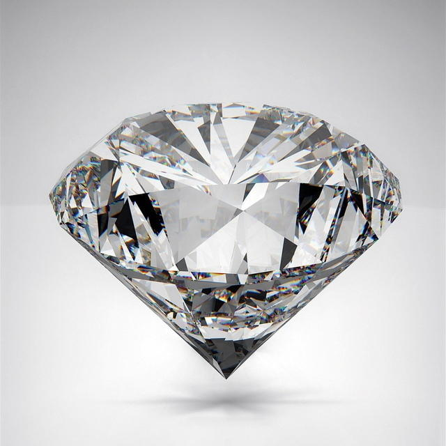
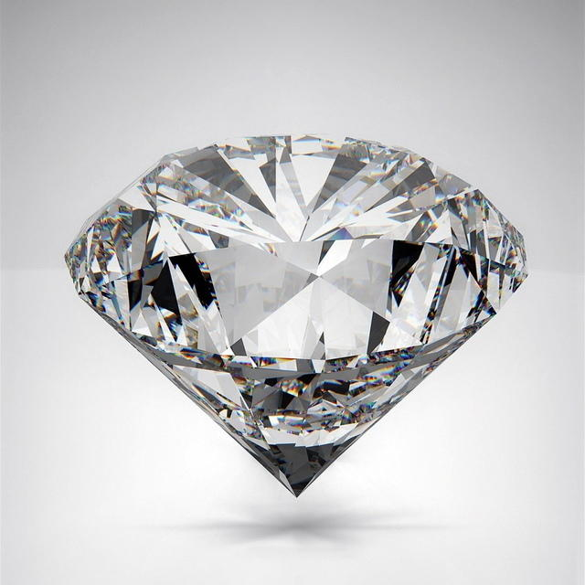
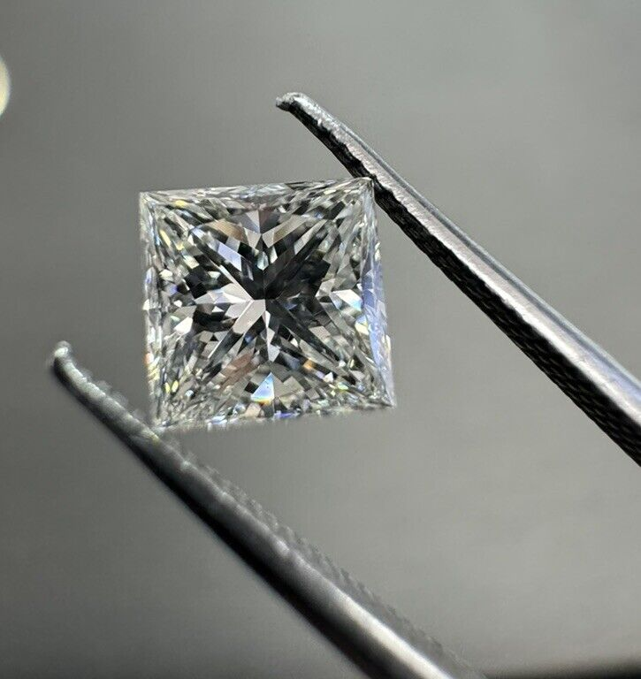
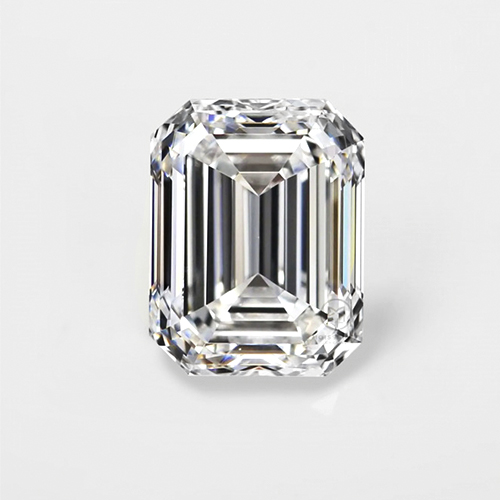
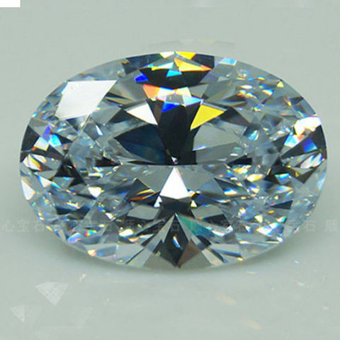

Кругла (діамантова) огранка
Hайпопулярніша, складається з 57 або 58 граней, що забезпечують максимальний блиск і гру світла.
Hайпопулярніша, складається з 57 або 58 граней, що забезпечують максимальний блиск і гру світла.
Kвадратна огранка з гострими кутами, яка поєднує класичну елегантність і сучасний стиль, створюючи яскраве сяйво.
Прямокутна форма з великими гранями, що підкреслює чистоту каменю та створює ефект «дзеркального коридору».
Витягнута форма з м’якими контурами, яка візуально збільшує розмір каменю та надає вишуканості прикрасі.
